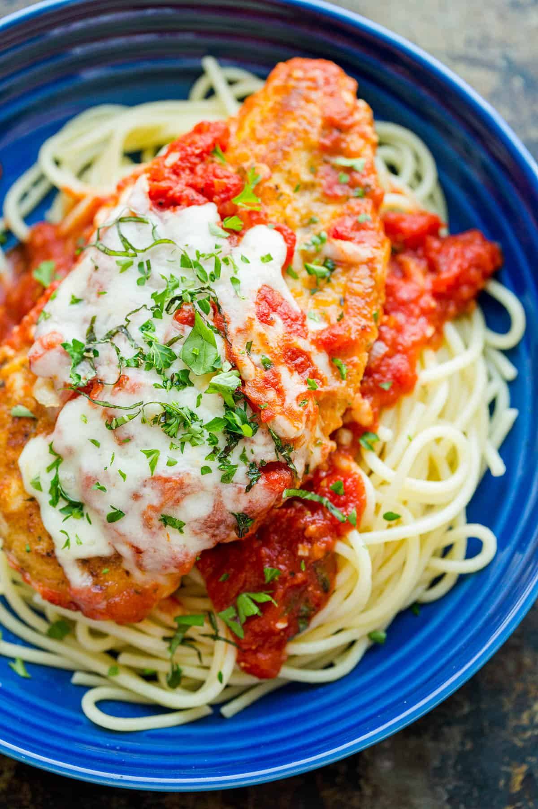

Chicken Parmesan

Description
This is the classic version of Chicken Parm. A restaurant-quality Chicken
Parmesan is so easy to recreate at home (for a fraction of the price).
Since this chicken is breaded and covered in sauce, it also reheats really
well so you will appreciate any leftovers. This is among our family's
favorite 30-minute meals.
This Chicken Parmesan Recipe is wonderful over hot pasta and served with
Caesar Salad or Roasted Asparagus on the side. It can also be served as a
hot sandwich on a toasted bun; yum!
Ingredients
- Chicken Breast
- Flour, salt, and pepper to dredge
- Eggs, for the egg wash
- Italian bread crumbs and parmesan for the crust
- A good cooking oil
- Marinara Sauce
- Shredded Mozzarella
- Parsley or basil to garnish
Steps
-
Mak the easy 20-minute homemade marinara and while it simmers, continue
to prep the chicken.
-
Cut 2 chicken breasts in half length-wise for 4 cutlets and season with
salt and pepper.
-
Set up 3 shallow bowls: In the first bowl, combine flour, salt and
pepper, in the second bowl, beat together 2 eggs and in the third bowl,
stir together parmesan and bread crumbs
-
Dredge chicken in flour, dusting off excess, then dip in eggs and turn
to coat in bread crumbs.
-
Once all chicken is breaded, heat a large non-stick skillet with enough
oil to lightly coat the bottom and saute 3-4 minutes per side or until
just cooked through at 165˚F on an instant-read thermometer.
-
Pour half of your marinara sauce in a casserole dish. Arrange chicken
pieces over marinara in a single layer. Spoon on marinara sauce and top
with cheese then bake in a casserole dish at 425˚F for 15 minutes until
cheese is melted and sauce is bubbling.